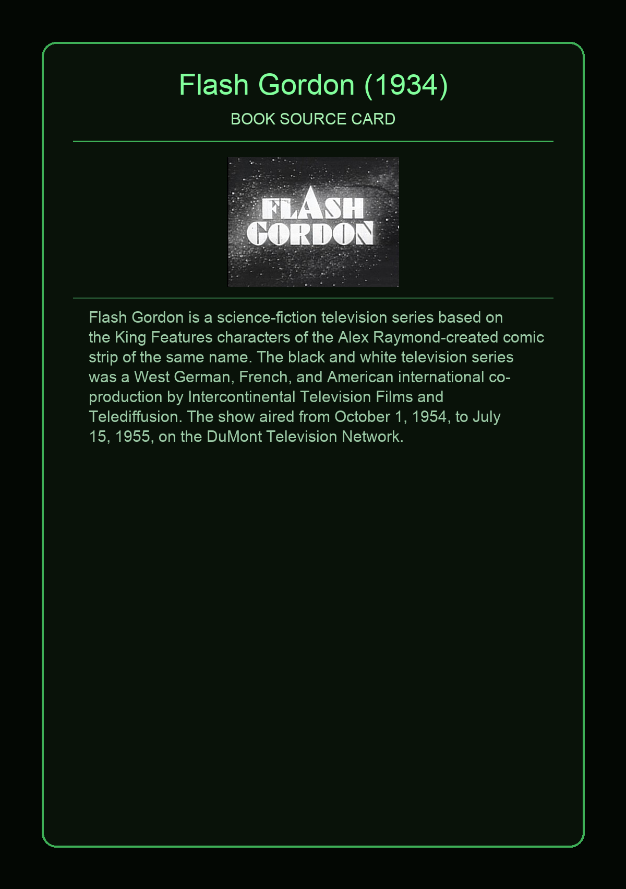
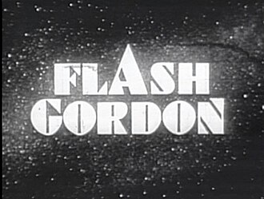

Flash Gordon is a science-fiction television series based on the King Features characters of the Alex Raymond-created comic strip of the same name. The black and white television series was a West German, French, and American international co-production by Intercontinental Television Films and Telediffusion. The show aired from October 1, 1954, to July 15, 1955, on the DuMont Television Network.
This page aggregates references to the source material behind Name Lore entries.